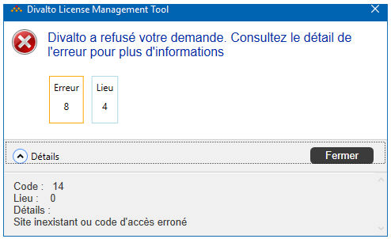

Accueil | DLMT - Gestion des licences nommées | Divalto Licences Management Tool (DLMT) | Dépannage
Vous trouverez ici les messages d'erreur les plus fréquents et leur descriptif.
Pour toutes les erreurs, nous vous invitons à consulter le détail :

{ErrorCodes.XlanNotAlive, "Impossible de contacter le serveur de licences"}
{ErrorCodes.WebServiceError, "Erreur lors du dialogue avec le service web Divalto"}
{ErrorCodes.SendFileToXlan, "Erreur lors de l'envoi du fichier de licences vers le serveur de licences"}
{ErrorCodes.DivaltoRefusedLicences, "Divalto a refusé votre demande. Consultez le détail de l'erreur pour plus d'informations"}
{ErrorCodes.ExportToExcel, "Erreur lors de l'export des associations des profils"}
{ErrorCodes.ImportFromExcel, "Erreur lors de l'import des associations des profils"}
{ErrorCodes.ImportLdap, "Erreur lors de l'import des associations depuis l'annuaire LDAP"}
{ErrorCodes.LdapOu, "Erreur lors de la récupération des unités d'organisations depuis l'annuaire LDAP"}
{ErrorCodes.LdapGetUsers, "Erreur lors de la récupération des utilisateurs depuis l'annuaire LDAP"}
{ErrorCodes.ScheduledTask, "Erreur lors de la création de la tâche planifiée"}
{ErrorCodes.WriteLogFile, "Erreur pendant l'écriture du fichier log."}
{ErrorCodes.DivaltoIsNotOkForUninstall, "Divalto n'a pas donné son accord pour la désinstallation"}
{ErrorCodes.DivaltoNotAlive, "Impossible de joindre les serveurs Divalto"}
{ErrorCodes.Consistency, "Erreur de cohérence dans la saisie"}
{ErrorCodes.LdapModifyUser, "Impossible de modifier l'utilisateur"}
{ErrorCodes.LoadCustomPropertiesConfiguration, "Erreur lors du chargement des propriétés LDAP"}
{ErrorCodes.LdapCreateUser, "Erreur lors de la création de l'utilisateur"}
{ErrorCodes.LdapDeleteUser, "Erreur lors de la suppression de l'utilisateur"}
{ErrorCodes.LdapGetGroups, "Erreur lors de la récupération des groupes depuis l'annuaire LDAP"}
{ErrorCodes.LdapCreateGroup, "Erreur lors de la création du groupe"}
{ErrorCodes.LdapDeleteGroup, "Erreur lors de la suppression du groupe"}
{ErrorCodes.LdapModifyGroup, "Erreur lors de la modification du groupe"}
{ErrorCodes.SaasNoCredentials, "Divalto Cloud : Accès refusé"}
{ErrorCodes.SaasChangePassword, "Erreur lors du changement du mot de passe"}